While stuck in the Los Angeles traffic, Sebastian Wilder "Seb", a jazz pianist, has a moment of road rage directed at aspiring actress Amelia Dolan, "Mia". After a hard day at work, Mia's subsequent audition doesn't go so well when the casting director takes a phone call during an emotional scene. That night, her roommates take her to a party in the Hollywood Hills, promising her that someone in the crowd could jump-start her career, but she ends up by walking home in disappointment.
During a gig at a restaurant, Seb slips into jazz improvisation, despite the owner's warning to only play traditional Christmas pieces. Mia overhears him playing as she passes by. Moved, she enters the restaurant and observes Seb being fired for his disobedience. As he storms out, Mia attempts to compliment him, but he brushes her off. Months later, she runs into Seb at a party where he plays in a 1980s pop cover band. After the gig, they walk to their cars and 'lament wasting a lovely night together' despite their clear chemistry.
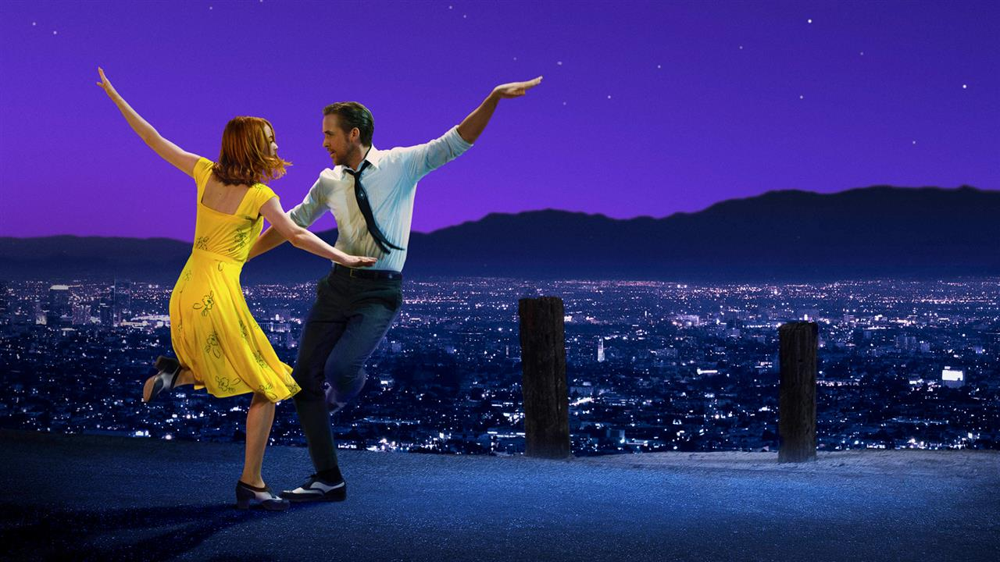
Seb arrives at Mia's workplace, and she shows him around the Warner Bros backlot, where she works as a barista, while explaining her passion for acting. He takes her to a jazz club, describing his passion for jazz and his desire to open his own club. Seb invites Mia to a screening and she accepts, forgetting a date with her boyfriend Greg. She goes to the theater and finds Seb as the film begins, but the screening is interrupted because the film print begins to burn due to a projector malfunction. They spend the rest of the evening together with a romantic visit to the Griffith Observatory.
After more failed auditions, Mia decides, with Seb's encouragement, to write a one-woman play. He begins to perform regularly at a jazz club, and they move in together. Seb's former bandmate Keith invites him to be the keyboardist in his new jazz fusion band, which will give him a steady income. Although dismayed by the band's pop style, Seb signs on after overhearing Mia trying to convince her mother that he is working on his career. The band finds success, but Mia knows the band’s music is not the type of music Seb wants to perform.
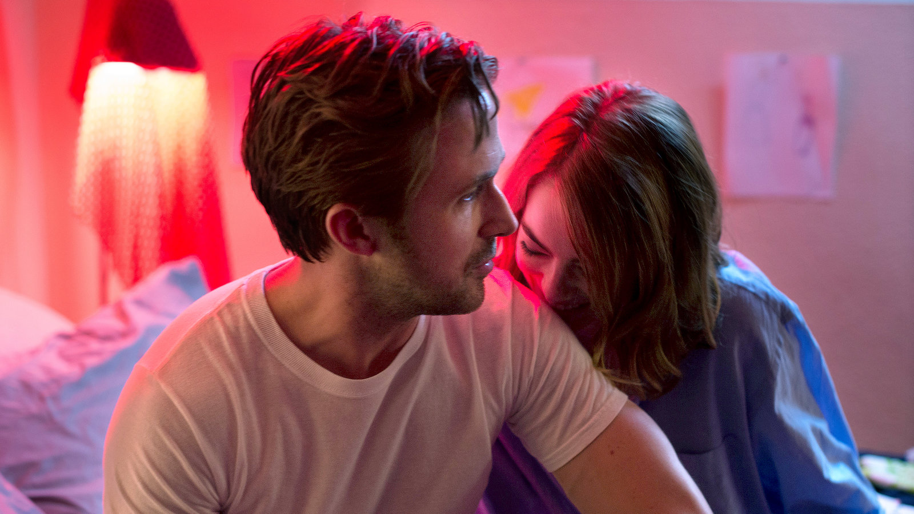
During the band's first tour, Seb and Mia have an argument; she accuses him of abandoning his dreams, while he claims that she liked him more when he was unsuccessful. Two weeks later, Seb misses Mia's play due to a photoshoot he had forgotten about. The play does not go as well as planned; few people attend, and Mia overhears dismissive comments about her performance. Unable to forgive him for missing her play, Mia breaks up with Seb and moves back to her hometown of Boulder City, Nevada.
Seb receives a phone call from a prominent casting director who attended Mia's play and invites her to audition for an upcoming film. He drives to Boulder City and persuades her to attend. During the audition, Mia is asked simply to tell a story. In response, she sings about how her aunt, a former stage actress who eventually died from alcoholism, inspired her to chase her dreams. Seb, confident the audition was a success, encourages her to devote herself to acting.
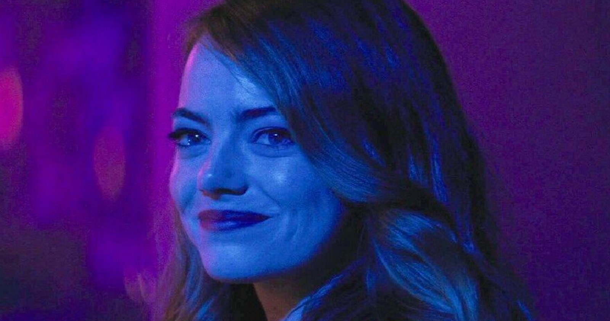
Five years later, Mia is a famous actress and married to another man, with whom she has a daughter. One night, the couple stumble upon a jazz bar. Recognizing the logo she had once designed, Mia realizes that Seb has opened his own jazz club. When he notices Mia in the crowd, Seb begins to play their love theme on the piano. A dream sequence unfolds in which the two imagine what might have been had their relationship thrived along with their careers. Seb and Mia acknowledge each other with a silent exchange of smiles before she leaves.
Cast
Emma Stone - Mia
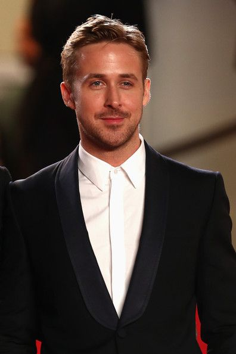
Ryan Gosling - Seb
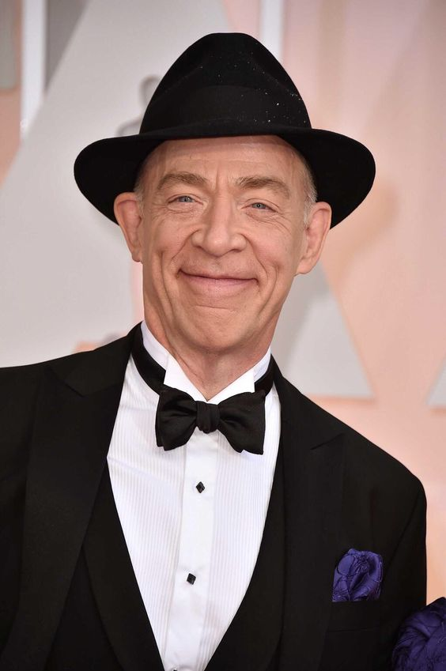
JK Simmons - Bill
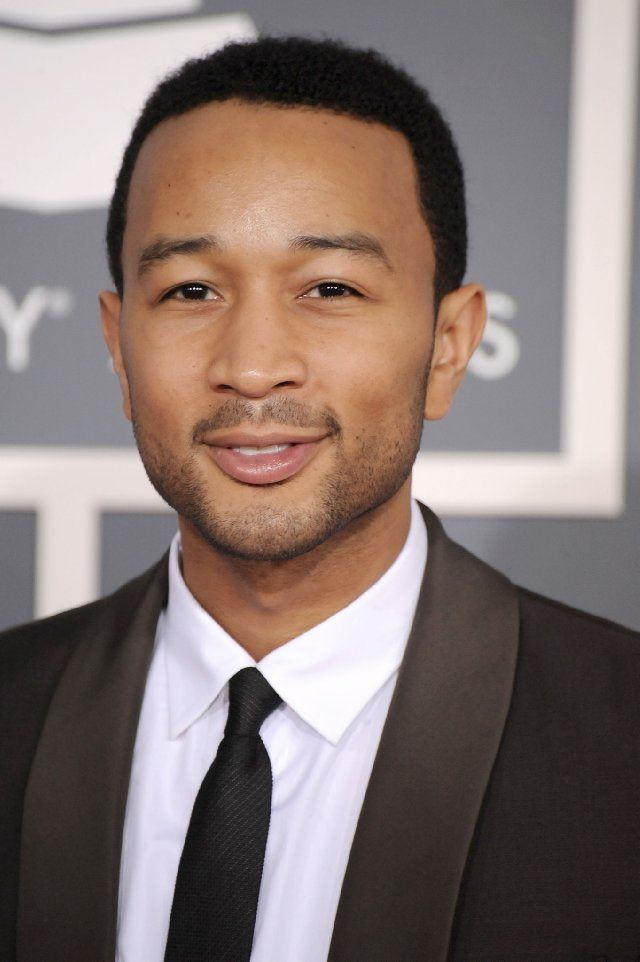
John Legend - Keith
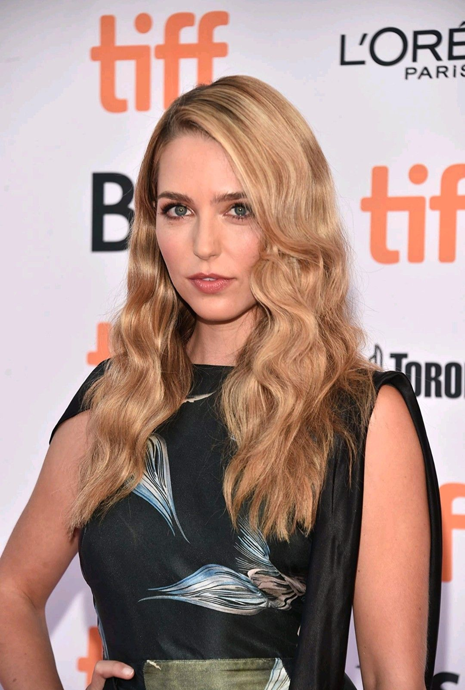
Jessica Rothe - Alexis
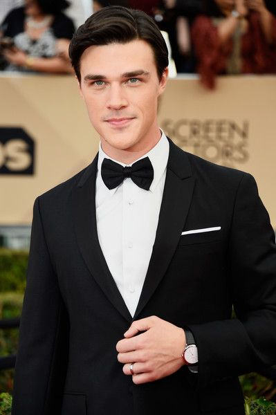
Finn Wittcock - Greg
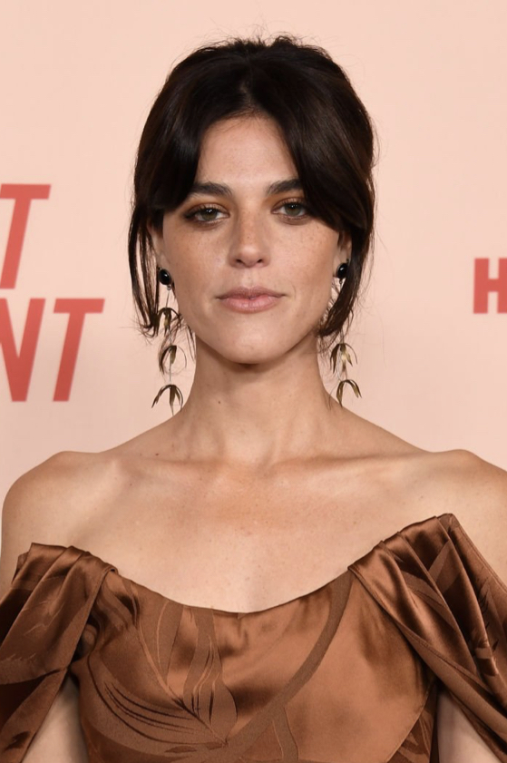
Callie Hernandez - Tracy
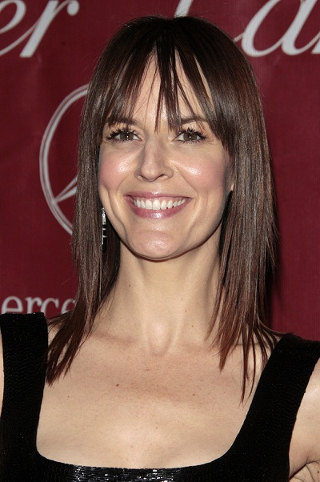
Rosemarie DeWitt - Laura Wilder
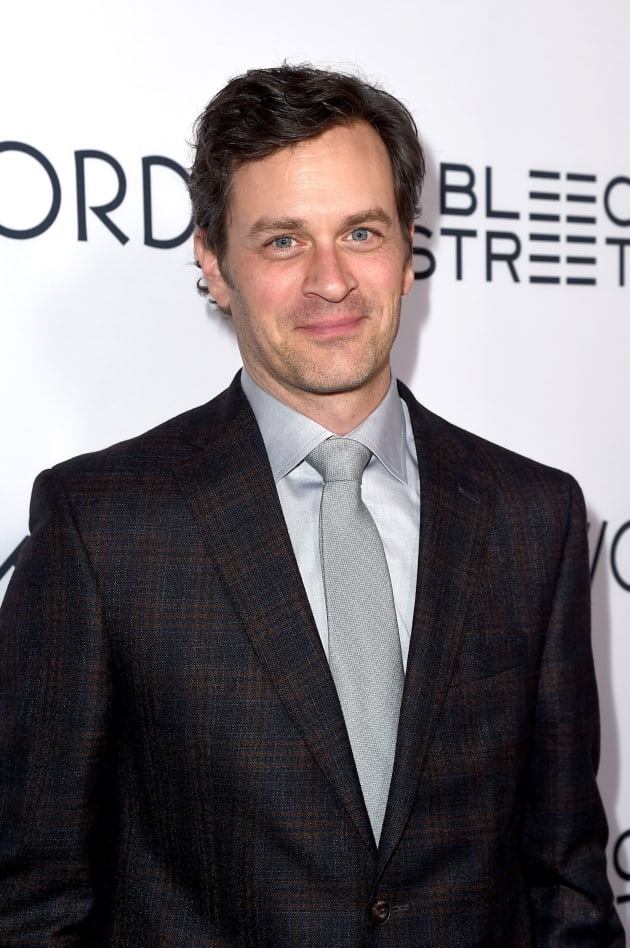
Tom Everett Scott - David
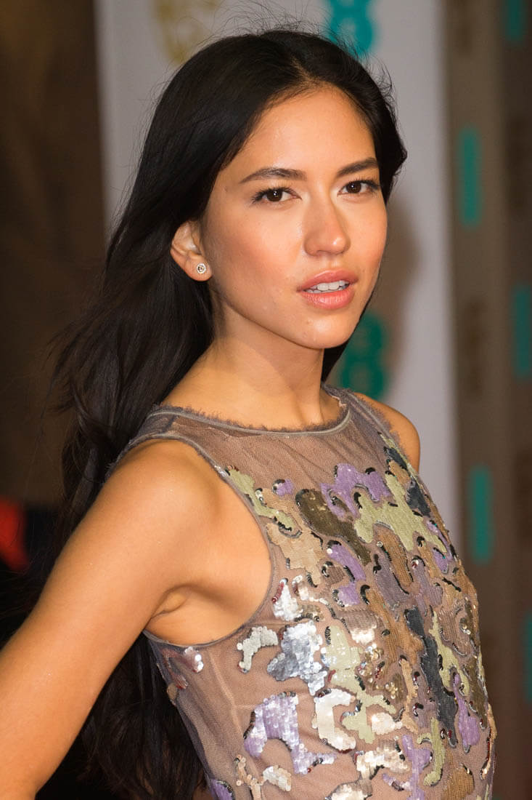
Sonoya Mizuno - Caitlin
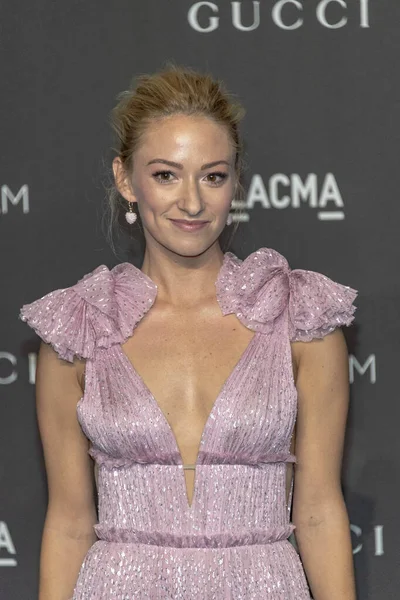
Olivia Hamilton - Bree
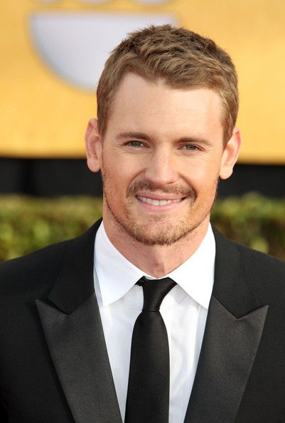
Josh Pence - Josh
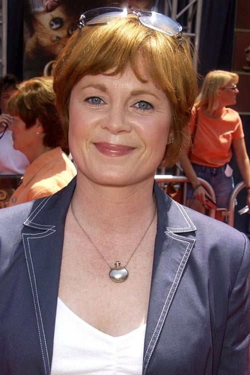
Meagen Fay - Mia's mother
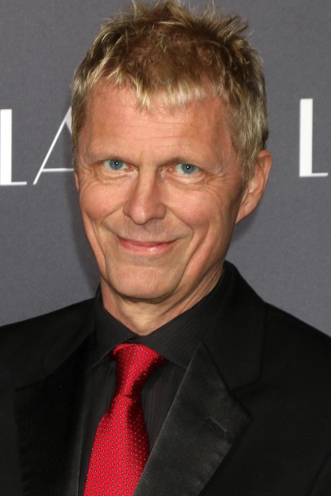
Marius De Vries - Clyde
Soundtrack
The songs for 'La La Land' were composed and orchestrated by Justin Hurwitz, Chazelle's Harvard University classmate, who also worked on his two prior films. The lyrics were written by Pasek and Paul, except for 'Start a Fire', which was written by John Legend, Hurwitz, Marius de Vries and Angelique Cinelu. A soundtrack album was released on December 9, 2016, by Interscope Records, featuring selections from Hurwitz's score and songs performed by the cast.
The director, Damien Chazelle wanted Los Angeles to be the primary setting for his film, commenting that "there is something very poetic about the city I think, about a city that is built by people with these unrealistic dreams and people who kind of just put it all on the line for that". Filming took place in more than 60 locations both in and near Los Angeles, including the Angels Flight trolley in downtown, houses in the Hollywood Hills, the Colorado Street Bridge, the Rialto Theatre in South Pasadena, the Warner Bros. studio lot, the Grand Central Market, Hermosa Beach's Lighthouse Café, Griffith Observatory, Griffith Park, Chateau Marmont, the Watts Towers, and Long Beach, with many scenes shot in one take.
One of the most interesting things about the producing of this movie was the style of filming. From the beginning, Chazelle wanted the movie's musical numbers to be filmed "head to toe" and performed in a single take, like those of the 1930s works of Fred Astaire and Ginger Rogers.
The opening pre-credits sequence was the first to be shot, and was filmed on a closed-off portion of two carpool direct connector ramps of the Judge Harry Pregerson Interchange, connecting the I-105 Carpool Lane to the I-110 Express Lanes, leading to Downtown Los Angeles. It was filmed in a span of two days, and required more than 100 dancers. For this particular scene, Chazelle wanted to give a sense of how vast the city is. Production designer David Wasco said, "I thought somebody was going to fall off and get killed". Chazelle compared the scene to the yellow brick road leading to the Emerald City in The Wizard of Oz (1939).
Award and Nominations
La La Land received eleven nominations at the 70th British Academy Film Awards, more than any other film of 2016. The film won in the categories of Best Film, Best Director, Best Actress in a Leading Role, Best Cinematography, and Best Film Music.
At the 74th Golden Globe Awards, La La Land received a leading seven nominations. The film won in all seven categories for which it was nominated, setting a record for the most Golden Globes won by a single film, namely Best Motion Picture – Musical or Comedy, Best Director, Best Actor – Comedy or Musical, Best Actress – Comedy or Musical , Best Screenplay, Best Original Score, and Best Original Song ("City of Stars") breaking the record One Flew Over the Cuckoo's Nest set for the most wins.
At the 89th Academy Awards, La La Land received a leading six awards, including Best Director, Best Actress (for Emma Stone), Best Cinematography, Best Original Score, Best Original Song ("City of Stars"), and Best Production Design. The film received a total of 14 nominations, tying the record for most nominations by a single film with All About Eve (1950) and Titanic (1997). Its other nominations were Best Picture, Best Actor (for Ryan Gosling), Best Original Screenplay, Best Film Editing, Best Costume Design, a second nomination for Best Original Song ("Audition (The Fools Who Dream)"), Best Sound Editing, and Best Sound Mixing.
Best picture Oscar gaffe
During the Oscars ceremony, presenter Faye Dunaway incorrectly announced that La La Land had won Best Picture, reading from the card Warren Beatty opened, which was actually a duplicate of the Best Actress card for Emma Stone. After the cast and crew of La La Land took the stage, it took the show's producers more than two minutes (during which nearly three speeches were made) to fix the mistake.